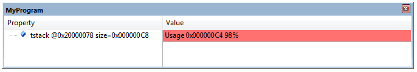

Read CPU register value.
The SCVD interpreter has the following built-in functions for calculation of stack memory usage, access to CPU registers and application program symbols.
| Function Name | Description |
| __CalcMemUsed | Provide memory usage information for stack area in user application program. |
| __FindSymbol | Get address value of a symbol in user application program. |
| __GetRegVal | Read the value of processor register from the target processor. |
| __Offset_of | Get offset of type member defined with the typedef. |
| __size_of | Number of elements of an array defined by a symbol in user application. |
| __Symbol_exists | Check if a specific symbol exists in the user application program. |
__CalcMemUsed
Provide memory usage information for stack area in user application program.
uint32_t __CalcMemUsed (uint32_t StackAddress, uint32_t StackSize, uint32_t FillPattern, uint32_t MagicValue)
- Parameters
-
| StackAddress | Start address of memory area |
| StackSize | Size of memory area in Bytes |
| FillPattern | Initial value of memory area, used to identify memory usage |
| MagicValue | Initial value at start address of memory area, used to identify memory (stack) overflow |
- Returns
- A packed 32-bit integer value that indicates memory usage in bytes, in percent, and memory overflow:
- Bit 0..19 Used memory in Bytes (how many bytes of FillPattern are overwritten)
- Bit 20..28 Used memory in percent (how many percent of FillPattern are overwritten)
- Bit 31 Memory overflow (MagicValue is overwritten)
The function provides information about the memory usage of a stack area and is typically applied to calculate the utilization of RTOS thread stacks. It assumes that the memory has been filled with a pattern value. Optionally there might be a value (called magic value) at the start of the memory that is used to detect stack overflows.
Example 1
C source file
uint32_t tstack[200/4];
void StackTest (void) {
uint32_t i;
memset (tstack, 0x8A, sizeof (tstack));
tstack[0] = 0xE25A2EA5;
for (i=(200/4)-1; i >= 10; i--) {
tstack[i] = i;
}
}
*.SCVD file
<?xml version="1.0" encoding="utf-8"?>
<component_viewer schemaVersion="0.1" xmlns:xs="http://www.w3.org/2001/XMLSchema-instance" xs:noNamespaceSchemaLocation="Component_Viewer.xsd">
<component name="MyExample" version="1.0.0"/> <!-- name and version of the component -->
<objects>
<object name="MyProgram">
<var name="StackStart" type="int32_t" value="0" />
<var name="StackSize" type="int32_t" value="0" />
<var name="StackUsage" type="int32_t" value="0" />
<calc>
StackStart = __FindSymbol ("tstack");
StackSize = __size_of ("tstack") * 4;
StackUsage = __CalcMemUsed (StackStart, StackSize, 0x8A8A8A8A, 0xE25A2EA5);
</calc>
<out name="MyProgram">
<item alert="(StackUsage >> 31)"
property="tstack @%x[StackStart] size=%x[StackSize]"
value="Usage %x[StackUsage & 0xFFFFF] %d[(StackUsage>>20) & 0xFF]%%" />
</out>
</object>
</objects>
</component_viewer>
Output

Example 2
Typical usage with an RTOS thread control block.
<component_viewer...>
<typedefs>
<!-- Task/Thread Control Block, debugger reads 52 bytes -->
<typedef name="Thread_CB" info="RTOS Task Control Block" size="52">
:
<member name="Stack" type="uint32_t" offset="44" info="Pointer to Task Stack memory block"/>
:
<!-- Helper variables for Stack-usage calculation -->
<var name="StackSize" type="uint32_t" />
<var name="StkUse" type="uint32_t" />
<var name="BytesUsed" type="uint32_t" />
<var name="Percentage" type="uint32_t" />
<var name="StkOverflow" type="int32_t" />
<var name="ShowStackInfo" type="int32_t" />
</typedef>
</typedefs>
</objects>
<object name="Threads">
<readlist name="TCB" type="*Thread_CB" symbol="os_TCB" based="1" count="10" init="1" />
<!-- Stack Usage Calculation when watermark check is enabled (ShowStackInfo) -->
<calc cond="TCB[i].ShowStackInfo && ((i != (TCB._count - 1)) && ((stackinfo >> 28) & 0x01))" >
StkUse = __CalcMemUsed (TCB[i].Stack, TCB[i].StackSize, 0xCCCCCCCC, 0xE25A2EA5);
TCB[i].StkOverflow = (StkUse & 0x80000000) ? 1 : 0;
TCB[i].StkUse &= ~0x80000000;
TCB[i].BytesUsed = (StkUse & 0xFFFFF);
TCB[i].Percentage = (StkUse >> 20) & 0xFF;
</calc>
</object>
</objects>
</component_viewer>
__FindSymbol
Get address value of a symbol in the user application program.
int32_t __FindSymbol (symbol_name)
- Parameters
-
| symbol_name | Reference to a symbol (examples: "main", "os_active_TCB", "tasks.c/xSchedulerRunning"). |
- Returns
- address value Address of the symbol.
The function searches for a symbol and returns the address value of the symbol in the user application.
- Note
- If the symbol cannot be found, then an error in the Component Viewer is displayed.
C source file
uint32_t tstack[200/4];
void StackTest (void) {
uint32_t i;
memset (tstack, 0x8A, sizeof (tstack));
tstack[0] = 0xE25A2EA5;
for (i=(200/4)-1; i >= 10; i--) {
tstack[i] = i;
}
}
*.SCVD file
<?xml version="1.0" encoding="utf-8"?>
<component_viewer schemaVersion="0.1" xmlns:xs="http://www.w3.org/2001/XMLSchema-instance" xs:noNamespaceSchemaLocation="Component_Viewer.xsd">
<component name="MyExample" version="1.0.0"/> <!-- name and version of the component -->
<objects>
<object name="MyProgram">
<var name="StackStart" type="int32_t" value="0" />
<var name="StackSize" type="int32_t" value="0" />
<var name="StackUsage" type="int32_t" value="0" />
<calc>
StackStart = __FindSymbol ("tstack");
StackSize = __size_of ("tstack") * 4;
StackUsage = __CalcMemUsed (StackStart, StackSize, 0x8A8A8A8A, 0xE25A2EA5);
</calc>
<out name="MyProgram">
<item alert="(StackUsage >> 31)"
property="tstack @%x[StackStart] size=%x[StackSize]"
value="Usage %x[StackUsage & 0xFFFFF] %d[(StackUsage>>20) & 0xFF]%%" />
</out>
</object>
</objects>
</component_viewer>
Output
__GetRegVal
__GetRegVal | Read the value of processor register from the target processor.
uint32_t __GetRegVal (char * RegisterName)
- Parameters
-
| RegisterName | Pointer to the name of a CPU register: "PSP", "MSP", .... |
- Returns
- Value of the CPU register
The function reads the value of a CPU register.
| Register Name | Description |
| R0 - R12 | General-purpose registers |
| R13 | Stack pointer (SP) |
| R14 | Link Register (LR) |
| R15 | Program Counter (PC) |
| XPSR | Combined Program Status Register |
| MSP | Main Stack Pointer |
| PSP | Process Stack Pointer |
| BASEPRI | Base Priority Mask Register |
| PRIMASK | Exception Mask Register |
| FAULTMASK | Fault Mask Register |
| CONTROL | Control Register |
Domain specifier x is required on ARMv8-M architecture for some registers to specify Non-Secure (x=NS) or Secure (x=S) access domain. Names of these registers then become as follows:
| Register Name | Description |
| MSP_x | Main Stack Pointer |
| PSP_x | Process Stack Pointer |
| MSPLIM_x | Main Stack Pointer Limit Register |
| PSPLIM_x | Process Stack Pointer Limit Register |
| BASEPRI_x | Base Priority Mask Register |
| PRIMASK_x | Exception Mask Register |
| FAULTMASK_x | Fault Mask Register |
| CONTROL_x | Control Register |
Example:
<objects>
<object name="CPU Registers">
<var name="R0" type="uint32_t" value="0"/>
<var name="R1" type="uint32_t" value="0"/>
<var name="R2" type="uint32_t" value="0"/>
<var name="R3" type="uint32_t" value="0"/>
<var name="XPSR" type="uint32_t" value="0"/>
<!-- ARMv8M registers -->
<var name="PSP_NS" type="uint32_t" value="0"/>
<var name="PSP_S" type="uint32_t" value="0"/>
<!-- Read registers -->
<calc>
R0 = __GetRegVal ("R0");
R1 = __GetRegVal ("R1");
R2 = __GetRegVal ("R2");
R3 = __GetRegVal ("R3");
XPSR = __GetRegVal ("XPSR");
</calc>
<calc cond="NonSecure">
PSP_NS = __GetRegVal ("PSP_NS");
</calc>
<calc cond="Secure">
PSP_S = __GetRegVal ("PSP_S");
</calc>
</object>
</objects>
__Symbol_exists
int32_t __Symbol_exists (symbol_name)
Search for symbol
- Parameters
-
| symbol_name | Reference to a symbol (examples: "main", "os_active_TCB", "tasks.c/xSchedulerRunning"). |
- Returns
- 1 for true - symbol present in user application
- 0 for false - symbol not found
The function searches for a debug symbol in the loaded user application.
and returns 1 when the symbol was found, otherwise 0 for false.
__Offset_of
uint32_t __Offset_of (typedef_mem_name)
Get offset of type member
- Parameters
-
| typedef_mem_name | Is the member name of a specified type and has the form typedef_name:typedef_member_name. |
- Returns
- The offset value of the specified typedef member.
The function returns the offset value of the specified typedef member. When using a <typedef> element with the import attribute, __Offset_of returns for members that are defined in the SCVD file but not present in the compiled image the value -1. The value -1 indicates that a member does not exist in the image.
Example:
__Offset_of (Thread_CB:Task_ID)
__size_of
int32_t __size_of (symbol_name)
Number of elements of an array defined by a symbol in user application
- Parameters
-
| symbol_name | Reference to a symbol (examples: "main", "os_active_TCB", "tasks.c/xSchedulerRunning"). |
- Returns
- number of elements of an array defined in a user application
The function searches for a debug symbol in the loaded user application. If the symbol is found it returns the number of elements of an array that is addressed by this symbol. If the symbol is not found, an error message is displayed.
Example:
User application code (file MyTest.c):
struct {
unsigned char c0;
unsigned char c1;
unsigned int i;
} MyList [20];
static int MyVar[10];
The following statements in the SCVD file output the number of elements of each variable. For 'MyList' the value is 20. The value 20 for 'MyVar' is only displayed when the variable exists.
<out name="MyTest">
<item property="Elements of 'MyList'" value="%d[__size_of("MyList")]"/>
<item cond="__Symbol_exists("MyTest.c/MyVar")" property="Elements of 'MyVar'" value="%d[__size_of("MyTest.c/MyVar")]"/>
</out>